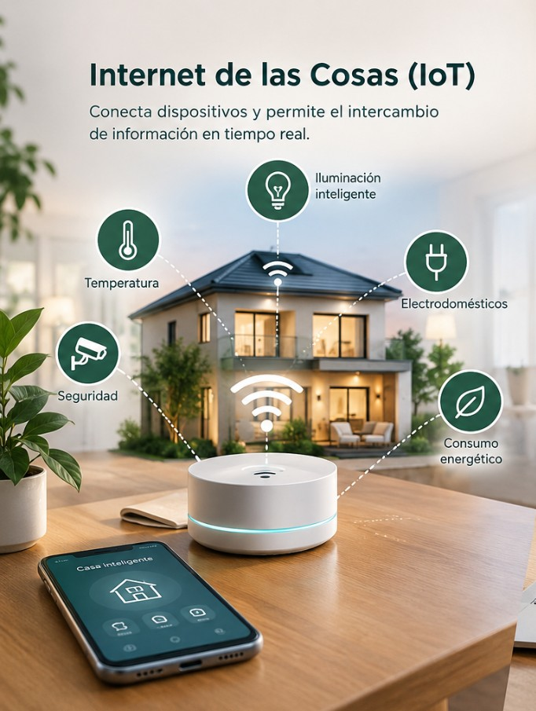

Sensores
Permiten recopilar información sobre diferentes condiciones del entorno y sobre el funcionamiento de dispositivos eléctricos.

Tecnologías inteligentes para la gestión energética
La investigación analiza diferentes tecnologías que pueden contribuir al monitoreo, análisis y optimización del consumo eléctrico residencial.
El análisis incluye sensores, automatización, domótica, Internet de las Cosas e inteligencia artificial.
Permiten recopilar información sobre diferentes condiciones del entorno y sobre el funcionamiento de dispositivos eléctricos.

Permite automatizar diferentes funciones dentro de los hogares y apoyar la gestión de los recursos.

El IoT permite conectar dispositivos y recopilar información que puede ser utilizada para analizar el consumo energético.
La inteligencia artificial puede ampliar las posibilidades de los sistemas de gestión energética mediante el análisis de grandes cantidades de información.
El artículo señala que estas herramientas pueden ayudar a reconocer patrones de comportamiento relacionados con el uso de la energía.

Recopilar información sobre condiciones del entorno y dispositivos.
Facilitar el control de diferentes procesos dentro del hogar.
Conectar dispositivos e intercambiar información relacionada con el consumo.
Analizar información y reconocer patrones de comportamiento energético.